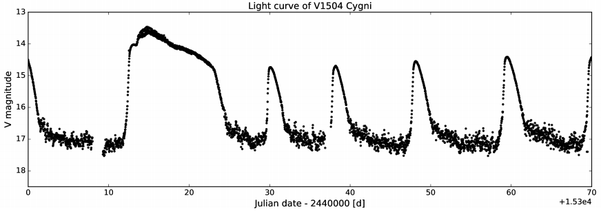

DIBS

SU Ursae Majoris (SU UMa)
SU UMa stars are a sub-class of dwarf novae, which are a kind of cataclysmic variables. SU UMa stars show short normal outbursts that last a few days along side superoutbursts, which last a few weeks. Superoutbursts show periodic humps called superhumps (Osaki et al. 2013). SU UMa stars are divided into three classes: ER UMa-type, pure SU UMa-type, and WZ Sge-type, in order of increasing activity (Otulakowska-Hypka et al. 2016).

Kepler light curve of the SU UMa type dwarf novae V1504 Cyg. Figure from Otulakowska-Hypka et al. 2016.